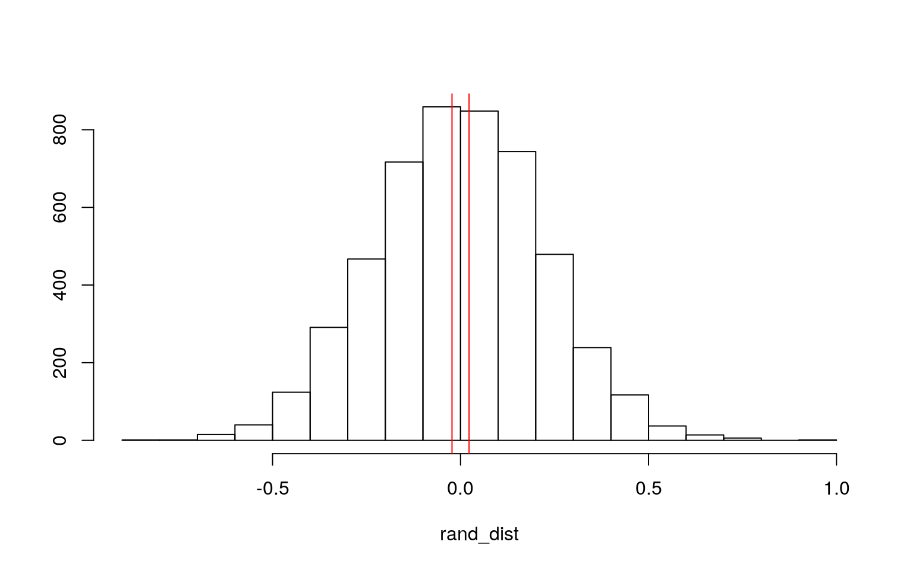
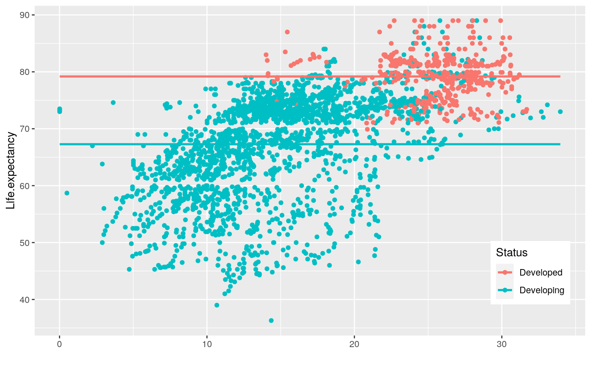
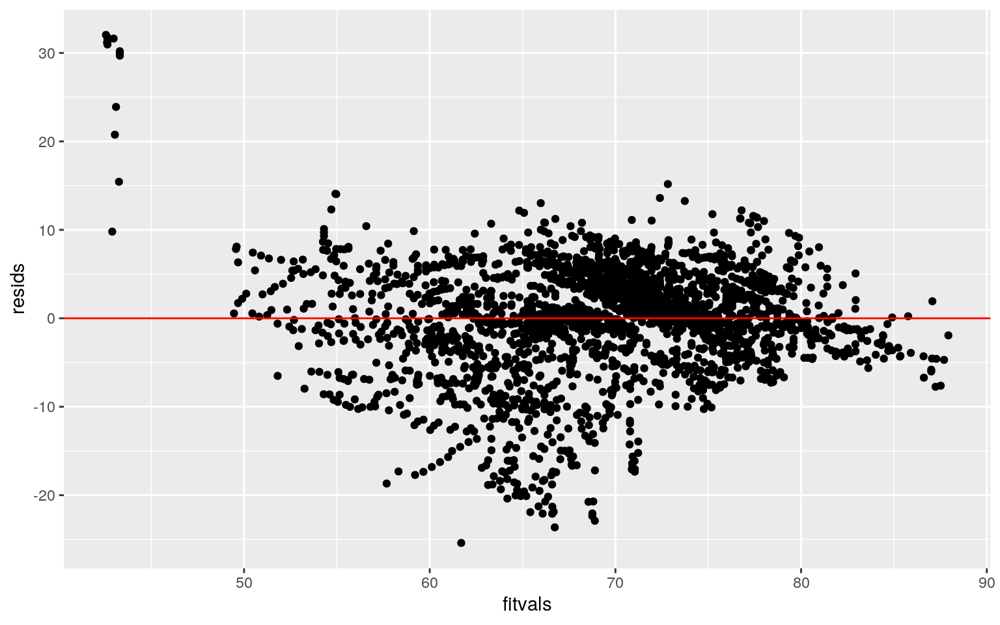
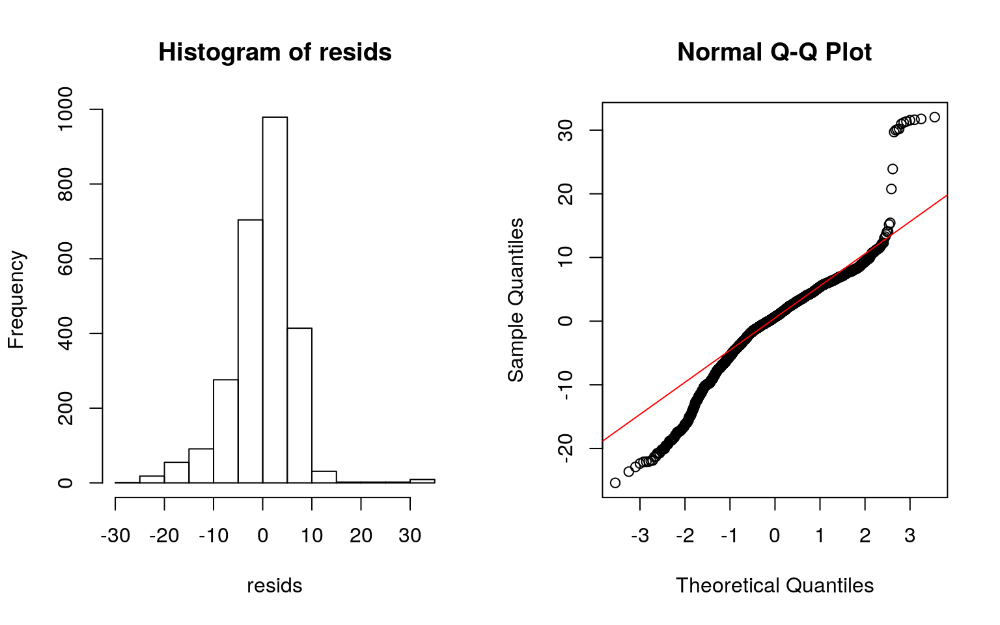
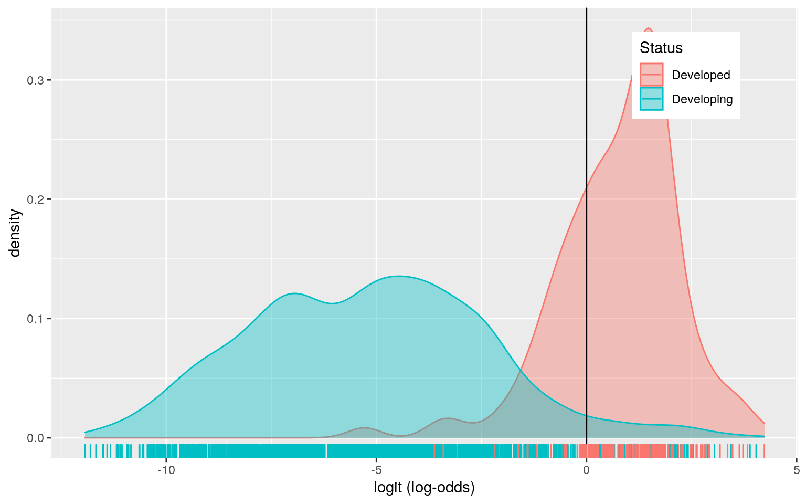
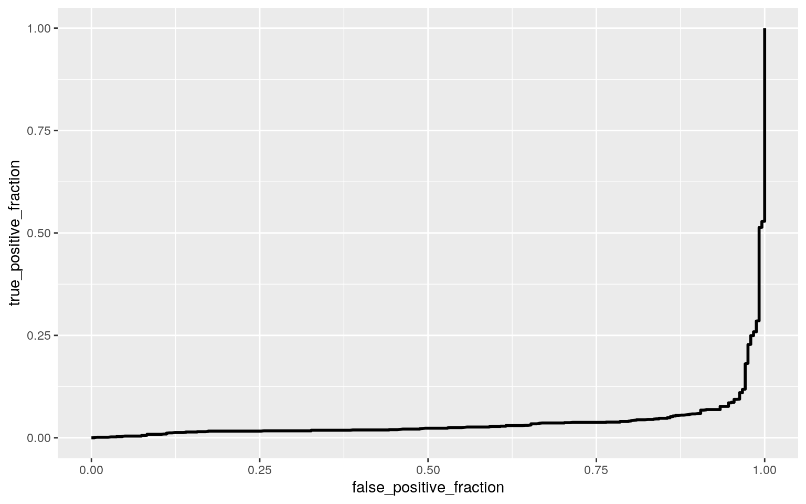

A knitted R Markdown document (preferably HTML) and the raw R Markdown file (as .Rmd) should both be submitted to Canvas by 11:59pm on the due date. These two documents will be graded jointly, so they must be consistent (i.e., don’t change the R Markdown file without also updating the knitted document). Knit an html copy too, for later! In the .Rmd file for Project 2, you can copy the first code-chunk into your project .Rmd file to get better formatting. Notice that you can adjust the opts_chunk$set(...) above to set certain parameters if necessary to make the knitting cleaner (you can globally set the size of all plots, etc). You can copy the set-up chunk in Project2.Rmd: I have gone ahead and set a few for you (such as disabling warnings and package-loading messges when knitting)!
Like before, I envision your written text forming something of a narrative structure around your code/output. All results presented must have corresponding code. Any answers/results/plots etc. given without the corresponding R code that generated the result will not be graded. Furthermore, all code contained in our project document should work properly. Please do not include any extraneous code or code which produces error messages. (Code which produces warnings is fine as long as you understand what the warnings mean.)
Find one dataset with at least 5 variables (ideally more!) that you want to use to build models/test hypotheses. At least one should be categorical (with 2-5 groups, ideally; definitely fewer than 10) and at least two should be numeric (taking on more than 10 distinct values). Ideally, at least of your variables will be binary (if not, you will have to create one by discretizing a numeric or collapsing levels of a categorical). You will need a minimum of 40 observations (at least 10 observations for every explanatory variable you have, ideally 20+ observations/variable).
It is perfectly fine to use either dataset (or the merged dataset, or a subset of your variables) from Project 1. However, I might encourage you to diversify things a bit and choose a different dataset to work with (particularly if the variables did not reveal interesting associations in Project 1 that you want to follow up with). The only requirement/restriction is that you may not use data from any examples we have done in class or lab. It would be a good idea to pick more cohesive data this time around (i.e., variables that you actually thing might have a relationship you would want to test). Think more along the lines of your Biostats project.
Again, you can use data from anywhere you want (see bottom for resources)! If you want a quick way to see whether a built-in (R) dataset has binary and/or character (i.e., categorical) variables, check out this list: https://vincentarelbundock.github.io/Rdatasets/datasets.html.
life_expectancy_tidy <- read.csv("https://drive.google.com/uc?export=download&id=1eAh-MFQd2kV3R6rUXyQPDgUzkDwbKDcd")My dataset describes the life expectancy of each country from 2000 - 2015. The dataset includes the variables year, status, life.expectancy, alcohol, schooling and many other variables. The year variable describes the year the data was collected for the respective country. The status variable describes whether or not the country is developing or developed. The life expectancy measures the life expectancy for the respective country for the corresponding year. The alcohol variable measures the alcohol consumption in litres per capita for the corresponding year. The schooling variable measures the number of years of schooling on average for the country for the corresponding year. There are 2938 observations for each variable.
library(dplyr)
library(mvtnorm)
library(ggExtra)
le <- life_expectancy_tidy
set.seed(1234)
dplyr::sample_n(le, 10)## Country Year Status Life.expectancy
## 1 Germany 2006 Developed 79.6
## 2 Congo 2001 Developing 52.7
## 3 Turkey 2004 Developing 72.0
## 4 France 2012 Developing 81.5
## 5 Bulgaria 2000 Developed 71.1
## 6 Russian Federation 2005 Developing 65.0
## 7 United Kingdom of Great Britain and Northern Ireland
2004 Developed 78.8
## 8 Mali 2008 Developing 55.5
## 9 Solomon Islands 2003 Developing 66.8
## 10 Guinea-Bissau 2003 Developing 53.0
## Adult.Mortality infant.deaths Alcohol
percentage.expenditure Hepatitis.B Measles BMI
## 1 84 3 11.76 6407.535954 87 2307 58.0
## 2 419 9 2.30 0.000000 NA 2152 19.8
## 3 132 33 1.35 1.132767 77 8927 56.8
## 4 83 3 11.50 751.379355 78 0 61.1
## 5 163 1 9.69 15.235727 94 46 57.0
## 6 327 18 11.57 625.508180 97 454 55.3
## 7 83 4 12.22 0.000000 NA 189 6.1
## 8 278 55 0.57 102.141374 74 98 19.6
## 9 215 0 1.18 16.831706 79 0 4.4
## 10 38 5 2.16 2.527115 NA 1158 19.0
## under.five.deaths Polio Total.expenditure Diphtheria
HIV.AIDS GDP Population
## 1 3 94 1.34 96 0.1 36447.87232 82376451
## 2 14 32 2.44 31 7.6 NA NA
## 3 39 85 5.37 85 0.1 64.72953 677855
## 4 3 99 11.44 99 0.1 4838.24440 6565979
## 5 1 94 6.70 93 0.1 169.28586 817172
## 6 20 98 5.21 98 0.3 5323.47388 143518523
## 7 4 92 7.98 92 0.1 NA NA
## 8 94 74 6.74 74 1.6 689.67842 14138216
## 9 0 84 6.00 84 0.1 744.76574 446769
## 10 8 65 5.62 6 4.6 36.57186 132122
## thinness..1.19.years thinness.5.9.years
Income.composition.of.resources Schooling
## 1 1.1 1.1 0.892 16.5
## 2 9.4 9.0 0.487 9.7
## 3 5.1 4.9 0.675 12.0
## 4 0.6 0.6 0.885 16.1
## 5 2.5 2.5 0.709 12.9
## 6 2.4 2.7 0.748 13.7
## 7 0.7 0.5 NA NA
## 8 9.2 9.0 0.360 5.8
## 9 1.3 1.3 0.453 8.0
## 10 9.6 9.5 0.000 7.4#MANOVA test
man1<-manova(cbind(Life.expectancy, Alcohol, Schooling)~Status, data=le)
summary(man1)## Df Pillai approx F num Df den Df Pr(>F)
## Status 1 0.42315 630.87 3 2580 < 2.2e-16 ***
## Residuals 2582
## ---
## Signif. codes: 0 '***' 0.001 '**' 0.01 '*' 0.05 '.' 0.1
' ' 1summary.aov(man1)## Response Life.expectancy :
## Df Sum Sq Mean Sq F value Pr(>F)
## Status 1 51546 51546 756.72 < 2.2e-16 ***
## Residuals 2582 175881 68
## ---
## Signif. codes: 0 '***' 0.001 '**' 0.01 '*' 0.05 '.' 0.1
' ' 1
##
## Response Alcohol :
## Df Sum Sq Mean Sq F value Pr(>F)
## Status 1 14216 14216.2 1346.2 < 2.2e-16 ***
## Residuals 2582 27266 10.6
## ---
## Signif. codes: 0 '***' 0.001 '**' 0.01 '*' 0.05 '.' 0.1
' ' 1
##
## Response Schooling :
## Df Sum Sq Mean Sq F value Pr(>F)
## Status 1 7634.7 7634.7 982.58 < 2.2e-16 ***
## Residuals 2582 20062.3 7.8
## ---
## Signif. codes: 0 '***' 0.001 '**' 0.01 '*' 0.05 '.' 0.1
' ' 1
##
## 354 observations deleted due to missingnesspairwise.t.test(le$Life.expectancy, le$Status, p.adj="none")##
## Pairwise comparisons using t tests with pooled SD
##
## data: le$Life.expectancy and le$Status
##
## Developed
## Developing <2e-16
##
## P value adjustment method: nonepairwise.t.test(le$Alcohol, le$Status, p.adj="none")##
## Pairwise comparisons using t tests with pooled SD
##
## data: le$Alcohol and le$Status
##
## Developed
## Developing <2e-16
##
## P value adjustment method: nonepairwise.t.test(le$Schooling, le$Status, p.adj="none")##
## Pairwise comparisons using t tests with pooled SD
##
## data: le$Schooling and le$Status
##
## Developed
## Developing <2e-16
##
## P value adjustment method: none#Type I error rate = 0.3016627
1-0.95^7## [1] 0.3016627#Bonferroni correction = 0.007142857
0.05/7## [1] 0.007142857The overall MANOVA is significant. 1 MANOVA, 3 ANOVA and 3 t tests were performed. The probability of at least one type I error is 0.3016627 and adjusting the significance level accordingly (bonferroni correction) is 0.007142857. Developing vs developed countries seem to differ significantly in terms of life expectancy, alcohol consumption and schooling. MANOVA assumptions include random samples, independent observations, multivariate normality of DVs, homogeneity of within-group covariance matrices, linear relationships among DVs, no extreme univariate or multivariate outliers, and no multicollinearity (i.e., DVs should not be too correlated). These assumptions are not likely to be met.
library(tidyverse)
set.seed(348)
head(le) ## Country Year Status Life.expectancy Adult.Mortality
infant.deaths Alcohol
## 1 Afghanistan 2015 Developing 65.0 263 62 0.01
## 2 Afghanistan 2014 Developing 59.9 271 64 0.01
## 3 Afghanistan 2013 Developing 59.9 268 66 0.01
## 4 Afghanistan 2012 Developing 59.5 272 69 0.01
## 5 Afghanistan 2011 Developing 59.2 275 71 0.01
## 6 Afghanistan 2010 Developing 58.8 279 74 0.01
## percentage.expenditure Hepatitis.B Measles BMI
under.five.deaths Polio Total.expenditure
## 1 71.279624 65 1154 19.1 83 6 8.16
## 2 73.523582 62 492 18.6 86 58 8.18
## 3 73.219243 64 430 18.1 89 62 8.13
## 4 78.184215 67 2787 17.6 93 67 8.52
## 5 7.097109 68 3013 17.2 97 68 7.87
## 6 79.679367 66 1989 16.7 102 66 9.20
## Diphtheria HIV.AIDS GDP Population thinness..1.19.years
thinness.5.9.years
## 1 65 0.1 584.25921 33736494 17.2 17.3
## 2 62 0.1 612.69651 327582 17.5 17.5
## 3 64 0.1 631.74498 31731688 17.7 17.7
## 4 67 0.1 669.95900 3696958 17.9 18.0
## 5 68 0.1 63.53723 2978599 18.2 18.2
## 6 66 0.1 553.32894 2883167 18.4 18.4
## Income.composition.of.resources Schooling
## 1 0.479 10.1
## 2 0.476 10.0
## 3 0.470 9.9
## 4 0.463 9.8
## 5 0.454 9.5
## 6 0.448 9.2le%>%group_by(Status)%>%
summarize(means=mean(Year))%>%summarize(`mean_diff`=diff(means))## # A tibble: 1 x 1
## mean_diff
## <dbl>
## 1 0.0227rand_dist<-vector() #create vector to hold diffs under null hypothesis
for(i in 1:5000){
new<-data.frame(Year=sample(le$Year),Status=le$Status) #scramble columns
rand_dist[i]<-mean(new[new$Status=="Developed",]$Year)-
mean(new[new$Status=="Developing",]$Year)} #compute mean difference (base R)
{hist(rand_dist,main="",ylab=""); abline(v = c(-0.02267106, 0.02267106),col="red")}
mean(rand_dist>0.02267106 | rand_dist< -0.02267106) #two-tailed p value## [1] 0.9188t.test(data=le,Year~Status)##
## Welch Two Sample t-test
##
## data: Year by Status
## t = -0.10102, df = 742.53, p-value = 0.9196
## alternative hypothesis: true difference in means is not
equal to 0
## 95 percent confidence interval:
## -0.4632389 0.4178968
## sample estimates:
## mean in group Developed mean in group Developing
## 2007.500 2007.523H0: mean amount of alcohol consumption is the same for developing vs developed countries HA: mean amount of alcohol consumption is different for developing vs developed countries The p-value of 0.9196 indicates that the test is not statistically significant and indicates strong evidence for the null hypothesis. Thus we fail to reject the null hypothesis and reject the alternative hypothesis.
3. (35 pts) Build a linear regression model predicting one of your response variables from at least 2 other variables, including their interaction. Mean-center any numeric variables involved in the interaction.
ggplot() using geom_smooth(method="lm"). If your interaction is numeric by numeric, refer to code in the slides to make the plot or check out the interactions package, which makes this easier. If you have 3 or more predictors, just chose two of them to plot for convenience. (8)coeftest(..., vcov=vcovHC(...)). Discuss significance of results, including any changes from before/after robust SEs if applicable. (8)library(lmtest)
library(sandwich)
fit<-lm(Life.expectancy ~ Alcohol + Schooling, data=le)
summary(fit)##
## Call:
## lm(formula = Life.expectancy ~ Alcohol + Schooling, data
= le)
##
## Residuals:
## Min 1Q Median 3Q Max
## -25.394 -2.908 0.636 3.897 32.039
##
## Coefficients:
## Estimate Std. Error t value Pr(>|t|)
## (Intercept) 43.30759 0.48442 89.400 <2e-16 ***
## Alcohol -0.09159 0.03664 -2.499 0.0125 *
## Schooling 2.19926 0.04485 49.040 <2e-16 ***
## ---
## Signif. codes: 0 '***' 0.001 '**' 0.01 '*' 0.05 '.' 0.1
' ' 1
##
## Residual standard error: 6.243 on 2581 degrees of
freedom
## (354 observations deleted due to missingness)
## Multiple R-squared: 0.5577, Adjusted R-squared: 0.5573
## F-statistic: 1627 on 2 and 2581 DF, p-value: < 2.2e-16ggplot(le, aes(x=Alcohol + Schooling, y=Life.expectancy,group=Status))+geom_point(aes(color=Status))+
geom_smooth(method="lm",formula=y~1,se=F,fullrange=T,aes(color=Status))+
theme(legend.position=c(.9,.19))+xlab("")
resids<-fit$residuals
fitvals<-fit$fitted.values
ggplot()+geom_point(aes(fitvals,resids))+geom_hline(yintercept=0, color='red')
par(mfrow=c(1,2)); hist(resids); qqnorm(resids); qqline(resids, col='red')
coeftest(fit, vcov = vcovHC(fit)) #regression after adjusting standard errors for violation##
## t test of coefficients:
##
## Estimate Std. Error t value Pr(>|t|)
## (Intercept) 43.307586 0.852914 50.7760 < 2e-16 ***
## Alcohol -0.091589 0.045375 -2.0185 0.04364 *
## Schooling 2.199264 0.078541 28.0014 < 2e-16 ***
## ---
## Signif. codes: 0 '***' 0.001 '**' 0.01 '*' 0.05 '.' 0.1
' ' 1summary(fit)##
## Call:
## lm(formula = Life.expectancy ~ Alcohol + Schooling, data
= le)
##
## Residuals:
## Min 1Q Median 3Q Max
## -25.394 -2.908 0.636 3.897 32.039
##
## Coefficients:
## Estimate Std. Error t value Pr(>|t|)
## (Intercept) 43.30759 0.48442 89.400 <2e-16 ***
## Alcohol -0.09159 0.03664 -2.499 0.0125 *
## Schooling 2.19926 0.04485 49.040 <2e-16 ***
## ---
## Signif. codes: 0 '***' 0.001 '**' 0.01 '*' 0.05 '.' 0.1
' ' 1
##
## Residual standard error: 6.243 on 2581 degrees of
freedom
## (354 observations deleted due to missingness)
## Multiple R-squared: 0.5577, Adjusted R-squared: 0.5573
## F-statistic: 1627 on 2 and 2581 DF, p-value: < 2.2e-16The coefficient estimate for Alcohol indicate that for every litre of alcohol drunk on average life expectancy changes by -0.09159. The coefficient estimate for Schooling indicates that for each year of schooling, life expectancy increases by 2.19926. The standard error for the intercept is 0.48442, the standard error for Alcohol is 0.03664, and the standard error for Schooling is 0.04485. From the graph, it appears that linearity, normality, and homoskedasticity look ok. The standard error did differ. The new standard error for the intercept is 0.852914, the new standard error for Alcohol is 0.045375, and the standard error for Schooling is 0.078541. The proportion of the variation in the outcome my model explains is 0.5573.
boot_dat<- sample_frac(le, replace=T)
samp_distn<-replicate(5000, {
boot_dat <- sample_frac(le, replace=T)
fit <- lm(Life.expectancy ~ Alcohol + Schooling, data=boot_dat)
coef(fit)
})
samp_distn %>% t %>% as.data.frame %>% summarize_all(sd) ## (Intercept) Alcohol Schooling
## 1 0.8224301 0.04509203 0.07602908The new intercept is 0.8368392, the new standard error for Alcohol is 0.04433427, and the new standard arror for Schooling is 0.07665198.
5. (25 pts) Fit a logistic regression model predicting a binary variable (if you don't have one, make/get one) from at least two explanatory variables (interaction not necessary).
library(tidyverse)
library(lmtest)
library(plotROC)
data<-le%>%mutate(y=ifelse(Status=="Developed",1,0))
data$Status<-factor(data$Status,levels=c("Developed","Developing"))
head(data)## Country Year Status Life.expectancy Adult.Mortality
infant.deaths Alcohol
## 1 Afghanistan 2015 Developing 65.0 263 62 0.01
## 2 Afghanistan 2014 Developing 59.9 271 64 0.01
## 3 Afghanistan 2013 Developing 59.9 268 66 0.01
## 4 Afghanistan 2012 Developing 59.5 272 69 0.01
## 5 Afghanistan 2011 Developing 59.2 275 71 0.01
## 6 Afghanistan 2010 Developing 58.8 279 74 0.01
## percentage.expenditure Hepatitis.B Measles BMI
under.five.deaths Polio Total.expenditure
## 1 71.279624 65 1154 19.1 83 6 8.16
## 2 73.523582 62 492 18.6 86 58 8.18
## 3 73.219243 64 430 18.1 89 62 8.13
## 4 78.184215 67 2787 17.6 93 67 8.52
## 5 7.097109 68 3013 17.2 97 68 7.87
## 6 79.679367 66 1989 16.7 102 66 9.20
## Diphtheria HIV.AIDS GDP Population thinness..1.19.years
thinness.5.9.years
## 1 65 0.1 584.25921 33736494 17.2 17.3
## 2 62 0.1 612.69651 327582 17.5 17.5
## 3 64 0.1 631.74498 31731688 17.7 17.7
## 4 67 0.1 669.95900 3696958 17.9 18.0
## 5 68 0.1 63.53723 2978599 18.2 18.2
## 6 66 0.1 553.32894 2883167 18.4 18.4
## Income.composition.of.resources Schooling y
## 1 0.479 10.1 0
## 2 0.476 10.0 0
## 3 0.470 9.9 0
## 4 0.463 9.8 0
## 5 0.454 9.5 0
## 6 0.448 9.2 0data<-na.omit(data)
fit2<-glm(y~Life.expectancy+Alcohol, data=data, family="binomial")
coeftest(fit2)##
## z test of coefficients:
##
## Estimate Std. Error z value Pr(>|z|)
## (Intercept) -22.798666 1.859061 -12.2635 < 2.2e-16 ***
## Life.expectancy 0.234702 0.023968 9.7923 < 2.2e-16 ***
## Alcohol 0.487426 0.036559 13.3327 < 2.2e-16 ***
## ---
## Signif. codes: 0 '***' 0.001 '**' 0.01 '*' 0.05 '.' 0.1
' ' 1probs<-predict(fit2,type="response")
table(predict=as.numeric(probs>.5),truth=data$y)%>%addmargins## truth
## predict 0 1 Sum
## 0 1354 66 1420
## 1 53 176 229
## Sum 1407 242 1649class_diag <- function(probs,truth){
#CONFUSION MATRIX: CALCULATE ACCURACY, TPR, TNR, PPV
tab<-table(factor(probs>.5,levels=c("FALSE","TRUE")),truth)
acc=sum(diag(tab))/sum(tab)
sens=tab[2,2]/colSums(tab)[2]
spec=tab[1,1]/colSums(tab)[1]
ppv=tab[2,2]/rowSums(tab)[2]
f1=2*(sens*ppv)/(sens+ppv)
if(is.numeric(truth)==FALSE & is.logical(truth)==FALSE) truth<-as.numeric(truth)-1
#CALCULATE EXACT AUC
ord<-order(probs, decreasing=TRUE)
probs <- probs[ord]; truth <- truth[ord]
TPR=cumsum(truth)/max(1,sum(truth))
FPR=cumsum(!truth)/max(1,sum(!truth))
dup<-c(probs[-1]>=probs[-length(probs)], FALSE)
TPR<-c(0,TPR[!dup],1); FPR<-c(0,FPR[!dup],1)
n <- length(TPR)
auc<- sum( ((TPR[-1]+TPR[-n])/2) * (FPR[-1]-FPR[-n]) )
data.frame(acc,sens,spec,ppv,f1,auc)
}
class_diag(probs, data$y)## acc sens spec ppv f1 auc
## 1 0.9278351 0.7272727 0.9623312 0.768559 0.7473461
0.9632519data$logit<-predict(fit2,type="link")
data%>%ggplot()+geom_density(aes(logit,color=Status,fill=Status), alpha=.4)+
theme(legend.position=c(.85,.85))+geom_vline(xintercept=0)+xlab("logit (log-odds)")+
geom_rug(aes(logit,color=Status))
ROCplot<-ggplot(data)+geom_roc(aes(d=Status,m=probs), n.cuts=0)
ROCplot
calc_auc(ROCplot)## PANEL group AUC
## 1 1 -1 0.03675395Because the coefficient estimates in context are positive for alcohol and negative for life expectancy, I can tell the two predictors significantly increase the probability of that a country is developing.
Accuracy=0.9278351 Sensitivity (TPR)=0.7272727 Specificity (TNR)=0.9623312 Precision (PPV)=0.768559 AUC=0.9632519
The AUC from the ROC plot is 0.03675395. The AUC decreased.
6. (25 pts) Perform a logistic regression predicting the same binary response variable from ALL of the rest of your variables (the more, the better!)
lambda.1se). Discuss which variables are retained. (5)data<-le%>%mutate(y=ifelse(Status=="Developed",1,0))
data$Status<-factor(data$Status,levels=c("Developed","Developing"))
head(data)## Country Year Status Life.expectancy Adult.Mortality
infant.deaths Alcohol
## 1 Afghanistan 2015 Developing 65.0 263 62 0.01
## 2 Afghanistan 2014 Developing 59.9 271 64 0.01
## 3 Afghanistan 2013 Developing 59.9 268 66 0.01
## 4 Afghanistan 2012 Developing 59.5 272 69 0.01
## 5 Afghanistan 2011 Developing 59.2 275 71 0.01
## 6 Afghanistan 2010 Developing 58.8 279 74 0.01
## percentage.expenditure Hepatitis.B Measles BMI
under.five.deaths Polio Total.expenditure
## 1 71.279624 65 1154 19.1 83 6 8.16
## 2 73.523582 62 492 18.6 86 58 8.18
## 3 73.219243 64 430 18.1 89 62 8.13
## 4 78.184215 67 2787 17.6 93 67 8.52
## 5 7.097109 68 3013 17.2 97 68 7.87
## 6 79.679367 66 1989 16.7 102 66 9.20
## Diphtheria HIV.AIDS GDP Population thinness..1.19.years
thinness.5.9.years
## 1 65 0.1 584.25921 33736494 17.2 17.3
## 2 62 0.1 612.69651 327582 17.5 17.5
## 3 64 0.1 631.74498 31731688 17.7 17.7
## 4 67 0.1 669.95900 3696958 17.9 18.0
## 5 68 0.1 63.53723 2978599 18.2 18.2
## 6 66 0.1 553.32894 2883167 18.4 18.4
## Income.composition.of.resources Schooling y
## 1 0.479 10.1 0
## 2 0.476 10.0 0
## 3 0.470 9.9 0
## 4 0.463 9.8 0
## 5 0.454 9.5 0
## 6 0.448 9.2 0data<-na.omit(data)
fit3<-glm(y~Life.expectancy + Adult.Mortality + infant.deaths + Alcohol + percentage.expenditure +
Hepatitis.B + Measles + BMI + under.five.deaths + Polio + Total.expenditure + Diphtheria +
HIV.AIDS + GDP + Population + thinness..1.19.years + thinness.5.9.years + Income.composition.of.resources +
Schooling, data=data, family="binomial")
coeftest(fit3)##
## z test of coefficients:
##
## Estimate Std. Error z value Pr(>|z|)
## (Intercept) -4.9629e+00 3.1833e+02 -0.0156 0.9875611
## Life.expectancy -3.7001e-02 4.8496e-02 -0.7630 0.4454880
## Adult.Mortality -6.9611e-03 2.5232e-03 -2.7589 0.0057998
**
## infant.deaths 1.7151e-01 3.7352e-01 0.4592 0.6461100
## Alcohol 3.6737e-01 4.4214e-02 8.3089 < 2.2e-16 ***
## percentage.expenditure -5.3540e-05 1.4142e-04 -0.3786
0.7049992
## Hepatitis.B 2.9210e-02 5.8480e-03 4.9948 5.891e-07 ***
## Measles 1.9812e-05 6.4136e-05 0.3089 0.7573957
## BMI 2.5154e-03 7.5201e-03 0.3345 0.7380143
## under.five.deaths -4.1642e-01 3.3303e-01 -1.2504
0.2111512
## Polio 1.0779e-02 1.2327e-02 0.8744 0.3818758
## Total.expenditure 1.7271e-02 5.1358e-02 0.3363 0.7366493
## Diphtheria -2.9987e-03 1.2832e-02 -0.2337 0.8152340
## HIV.AIDS -1.2521e+02 3.1831e+03 -0.0393 0.9686218
## GDP 1.5771e-06 2.2588e-05 0.0698 0.9443355
## Population 6.7730e-09 8.7935e-09 0.7702 0.4411684
## thinness..1.19.years -6.9499e-01 2.6663e-01 -2.6066
0.0091449 **
## thinness.5.9.years 7.1540e-01 2.5868e-01 2.7656
0.0056822 **
## Income.composition.of.resources 1.9149e+01 5.0455e+00
3.7952 0.0001475 ***
## Schooling -5.9376e-02 1.3327e-01 -0.4455 0.6559334
## ---
## Signif. codes: 0 '***' 0.001 '**' 0.01 '*' 0.05 '.' 0.1
' ' 1probs<-predict(fit3,type="response")
table(predict=as.numeric(probs>.5),truth=data$y)%>%addmargins## truth
## predict 0 1 Sum
## 0 1364 45 1409
## 1 43 197 240
## Sum 1407 242 1649class_diag(probs, data$y)## acc sens spec ppv f1 auc
## 1 0.9466343 0.8140496 0.9694385 0.8208333 0.8174274
0.9781846set.seed(1234)
k=10
data <- le %>% sample_frac #put rows of dataset in random order
folds <- ntile(1:nrow(data),n=10) #create fold labels
diags<-NULL
for(i in 1:k){
train <- data[folds!=i,] #create training set (all but fold i)
test <- data[folds==i,] #create test set (just fold i)
truth <- test$Status #save truth labels from fold i
fit <- glm(Status~Life.expectancy + Adult.Mortality + infant.deaths + Alcohol + percentage.expenditure +
Hepatitis.B + Measles + BMI + under.five.deaths + Polio + Total.expenditure + Diphtheria +
HIV.AIDS + GDP + Population + thinness..1.19.years + thinness.5.9.years + Income.composition.of.resources +
Schooling, data=train, family="binomial")
probs <- predict(fit, newdata=test, type="response")
diags<-rbind(diags,class_diag(probs,truth))
}
summarize_all(diags,mean)## acc sens spec ppv f1 auc
## 1 0.9382767 0.9637796 0.7916945 0.9636347 0.9635994 NAlibrary(glmnet)
le1 <- na.omit(le)
y<-as.matrix(le1$Status)
x<-model.matrix(Status~Life.expectancy + Adult.Mortality + infant.deaths + Alcohol + percentage.expenditure +
Hepatitis.B + Measles + BMI + under.five.deaths + Polio + Total.expenditure + Diphtheria +
HIV.AIDS + GDP + Population + thinness..1.19.years + thinness.5.9.years + Income.composition.of.resources +
Schooling,data=le)[,-1]
x <- scale(x)
cv<-cv.glmnet(x,y,family="binomial")
lasso1<-glmnet(x,y,family="binomial",lambda=cv$lambda.1se)
coef(lasso1) ## 20 x 1 sparse Matrix of class "dgCMatrix"
## s0
## (Intercept) 4.47135654
## Life.expectancy -0.43583879
## Adult.Mortality 0.56418101
## infant.deaths .
## Alcohol -1.45590127
## percentage.expenditure .
## Hepatitis.B -0.51641072
## Measles .
## BMI .
## under.five.deaths .
## Polio .
## Total.expenditure -0.01717151
## Diphtheria .
## HIV.AIDS .
## GDP -0.02422926
## Population .
## thinness..1.19.years .
## thinness.5.9.years .
## Income.composition.of.resources -1.67841596
## Schooling -0.12461958set.seed(1234)
k=10
data <- le1 %>% sample_frac
folds <- ntile(1:nrow(data),n=10)
diags<-NULL
for(i in 1:k){
train <- data[folds!=i,]
test <- data[folds==i,]
truth <- test$Status
fit <- glm(Status~Life.expectancy + Adult.Mortality + infant.deaths + Alcohol + percentage.expenditure +
Hepatitis.B + Measles + BMI + under.five.deaths + Polio + Total.expenditure + Diphtheria +
HIV.AIDS + GDP + Population + thinness..1.19.years + thinness.5.9.years + Income.composition.of.resources +
Schooling, data=train, family="binomial")
probs <- predict(fit, newdata=test, type="response")
diags<-rbind(diags,class_diag(probs,truth))
}
summarize_all(diags,mean)## acc sens spec ppv f1 auc
## 1 0.9375388 0.9608035 0.8068669 0.9658007 0.9631091
0.9711832Fit model Accuracy=0.9466343 Sensitivity (TPR)=0.8140496 Specificity (TNR)=0.9694385 Precision (PPV)=0.8208333 AUC=0.9781846
Accuracy, Sensitivity, Specificity, Precision, and AUC all increased slightly.
CV model Accuracy=0.9382767 Sensitivity (TPR)=0.9637796 Specificity (TNR)=0.7916945 Precision (PPV)=0.9636347 AUC=NA
The AUC became NA, which is different from the AUC of 0.9781846 from the in-sample metrics.
The variables infant.deaths, Measles, BMI, under.five.deaths, Polio, Diphtheria, HIV.AIDS, Population, thinness..1.19.years, thinness.5.9.years are retained.
The AUC decreased slightly to 0.9711832.
You can choose ANY datasets you want that meet the above criteria for variables and observations. You can make it as serious as you want, or not, but keep in mind that you will be incorporating this project into a portfolio webpage for your final in this course, so choose something that really reflects who you are, or something that you feel will advance you in the direction you hope to move career-wise, or something that you think is really neat, or whatever. On the flip side, regardless of what you pick, you will be performing all the same tasks, so it doesn't end up being that big of a deal.
If you are totally clueless and have no direction at all, log into the server and type
data(package = .packages(all.available = TRUE))This will print out a list of ALL datasets in ALL packages installed on the server (a ton)! Scroll until your eyes bleed! Actually, do not scroll that much... To start with something more manageable, just run the command on your own computer, or just run data() to bring up the datasets in your current environment. To read more about a dataset, do ?packagename::datasetname.
If it is easier for you, and in case you don't have many packages installed, a list of R datasets from a few common packages (also downloadable in CSV format) is given at the following website: https://vincentarelbundock.github.io/Rdatasets/datasets.html.
A good package to download for fun/relevant data is fivethiryeight. Run install.packages("fivethirtyeight"), load the packages with library(fivethirtyeight), run data(), and then scroll down to view the datasets. Here is an online list of all 127 datasets (with links to the 538 articles). Lots of sports, politics, current events, etc.
If you have already started to specialize (e.g., ecology, epidemiology) you might look at discipline-specific R packages (vegan, epi, respectively). We will be using some tools from these packages later in the course, but they come with lots of data too, which you can explore according to the directions above
However, you emphatically DO NOT have to use datasets available via R packages! In fact, I would much prefer it if you found the data from completely separate sources and brought them together (a much more realistic experience in the real world)! You can even reuse data from your SDS328M project, provided it shares a variable in common with other data which allows you to merge the two together (e.g., if you still had the timestamp, you could look up the weather that day: https://www.wunderground.com/history/). If you work in a research lab or have access to old data, you could potentially merge it with new data from your lab!
Here is a curated list of interesting datasets (read-only spreadsheet format): https://docs.google.com/spreadsheets/d/1wZhPLMCHKJvwOkP4juclhjFgqIY8fQFMemwKL2c64vk/edit
Here is another great compilation of datasets: https://github.com/rfordatascience/tidytuesday
Here is the UCI Machine Learning Repository: https://archive.ics.uci.edu/ml/index.php
Here is another good general place to look: https://www.kaggle.com/datasets
To help narrow your search down or to see interesting variable ideas, check out https://www.tylervigen.com/spurious-correlations. This is the spurious correlations website, and it is fun, but if you look at the bottom of each plot you will see sources for the data. This is a good place to find very general data (or at least get a sense of where you can scrape data together from)!
If you are interested in medical data, check out www.countyhealthrankings.org
If you are interested in scraping UT data, they make loads of data public (e.g., beyond just professor CVs and syllabi). Check out all the data that is available in the statistical handbooks: https://reports.utexas.edu/statistical-handbook
Data.gov 186,000+ datasets!
Social Explorer is a nice interface to Census and American Community Survey data (more user-friendly than the government sites). May need to sign up for a free trial.
U.S. Bureau of Labor Statistics
Gapminder, data about the world.
...